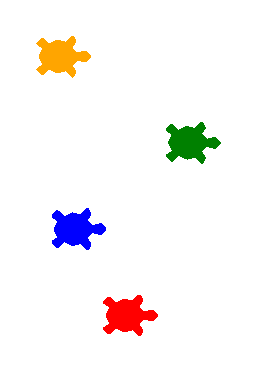

Проект: гонка Turtle с использованием циклов
Несколько черепашек на одном экране одновременно — и подведение итогов всей проектной лаборатории.
TurtlelistwhilerandomЧто создаём
Помните из главы 6, что экран и черепашка — разные объекты, и черепашек может быть несколько? Настало время это использовать: гонка из нескольких черепашек со случайным шагом.
import turtle
import random
random.seed(2)
screen = turtle.Screen()
screen.setup(500, 400)
cveta = ["red", "blue", "green", "orange"]
uchastniki = []
for i, cvet in enumerate(cveta):
t = turtle.Turtle()
t.shape("turtle")
t.color(cvet)
t.penup()
t.goto(-200, i * 40 - 60)
uchastniki.append(t)
finish_line = 200
pobeditel = None
while pobeditel is None:
for t in uchastniki:
t.forward(random.randint(1, 10))
if t.xcor() >= finish_line:
pobeditel = t.pencolor()
break
screen.exitonclick()
import random
screen = turtle.Screen()
screen.setup(500, 400)
cveta = ["red", "blue", "green", "orange"]
uchastniki = []
for i, cvet in enumerate(cveta):
t = turtle.Turtle()
t.shape("turtle")
t.color(cvet)
t.penup()
t.goto(-200, i * 40 - 60)
uchastniki.append(t)
finish_line = 200
pobeditel = None
while pobeditel is None:
for t in uchastniki:
t.forward(random.randint(1, 10))
if t.xcor() >= finish_line:
pobeditel = t.pencolor()
break
print(f"Победила черепашка цвета {pobeditel}!")uchastniki — обычный список Python (глава 11), просто хранящий не числа, а объекты turtle.Turtle(). Цикл for t in uchastniki перебирает его точно так же, как перебирал бы список чисел или строк.Нарисуйте вертикальную линию на финише (x=200) перед началом гонки, используя отдельную черепашку-«судью».
Итоги главы
Что мы теперь умеем строить
Как далеко мы продвинулись
| Глава 1 | Глава 12 |
|---|---|
print("Hello") | интерактивная игра, анализатор текста, викторина, записная книжка, структурированные данные, графический генератор |
Чек-лист готовности проекта
Полный чек-лист — в §12.2 «Строим проект по шагам». Перед тем как считать любой из 16 проектов главы законченным, полезно пройтись по нему ещё раз.
Что дальше: зачем нужны функции
Присмотритесь к проектам этой главы: нормализация ввода
(.strip().lower()) повторяется в анализаторе текста, в
консоли команд и в викторине. Накопитель, который нужно завести до цикла — та же самая
ошибка чинилась трижды в разных Debug Lab. Формула угла поворота Turtle появляется и в
ёлке, и в мандале, и в студии многоугольников.
Что мы закрепили в этой главе
- Декомпозиция — разбиение большой задачи на маленькие понятные шаги.
- Инкрементальная разработка — маленькими шагами, каждый сразу проверяется, а не 80 строк за раз.
- Данные отдельно от алгоритма — викторина и студия многоугольников показали, что одна и та же логика работает для любых входных данных.
- Рефакторинг — улучшение структуры программы без изменения её поведения.
- Условия, циклы, строки, числа,
random, списки/множества/словари и Turtle — впервые работали вместе, в одной программе, а не по отдельности. - Системный воркфлоу отладки: ожидание vs реальность → первое расхождение → причина → исправление.
- Сложные результаты (викторина, анализатор текста, мандала) — всегда комбинация нескольких простых, уже знакомых приёмов.